Flat, top-down, transparent. Each file ships as .svg (vector — scale freely / re-export at any size) and .png (2048 px, transparent). All district / street art shares the same 1024² canvas centred on the district centre, so a centre pivot lines everything up.
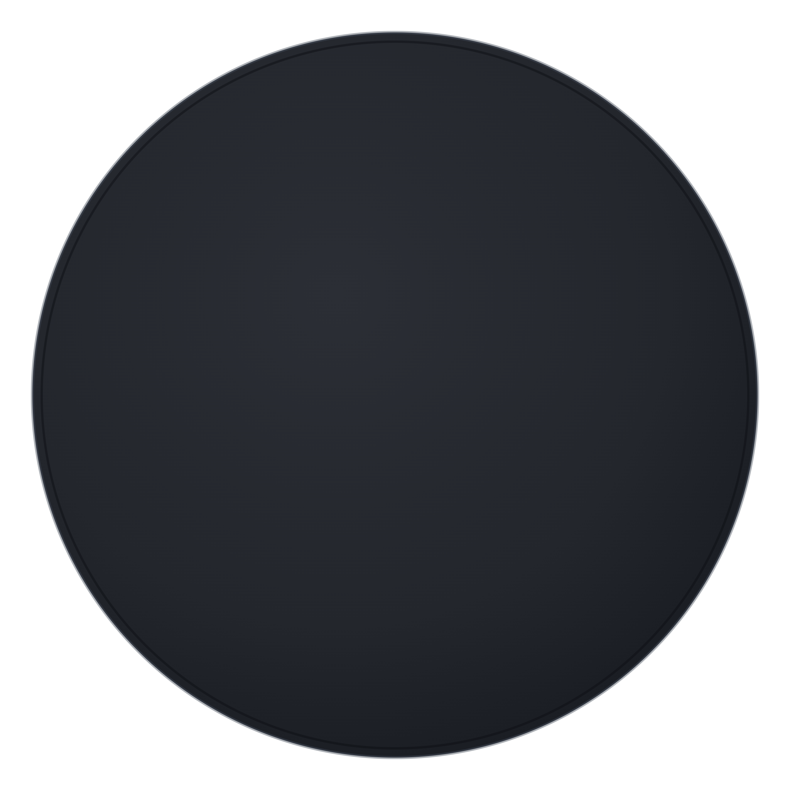
The three streets in a district are one piece rotated 120°. Import one of these, set pivot = Center, and instantiate 3× at 0° / 120° / 240° to fill a district. Choose the style you locked: puzzle.
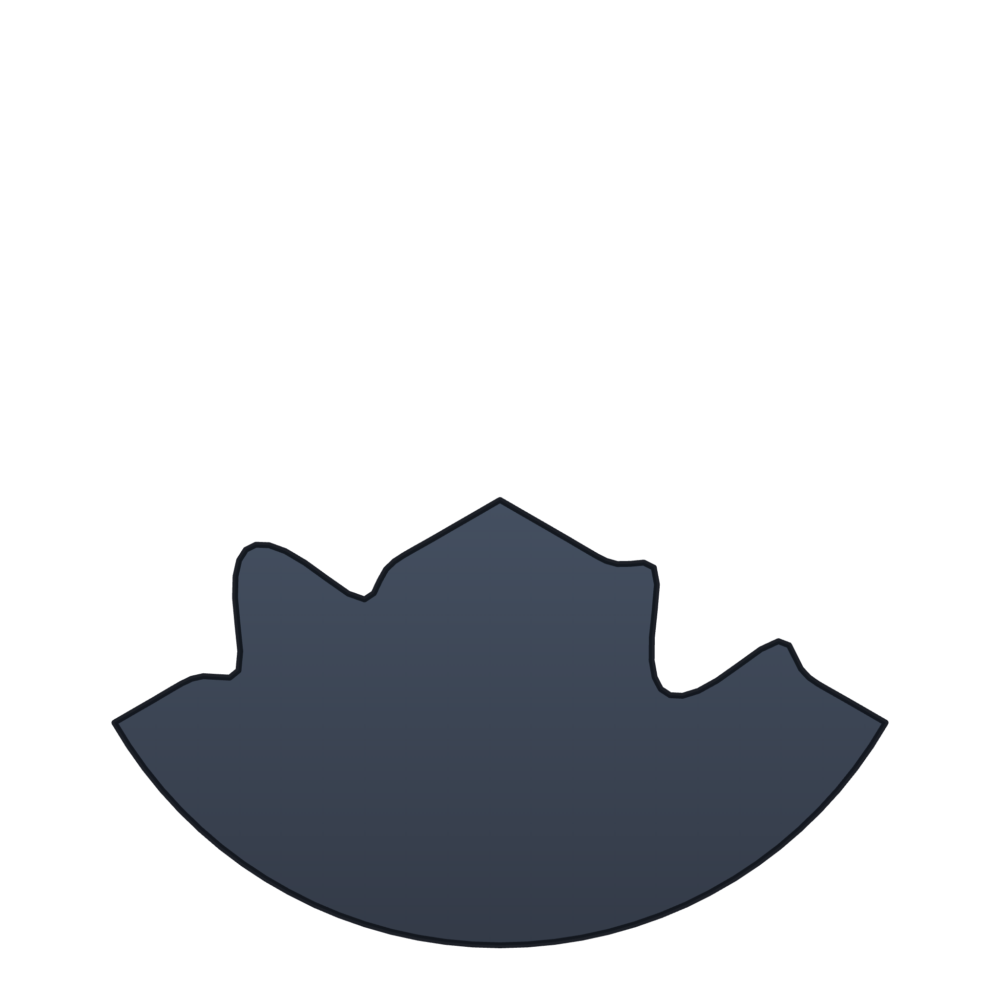
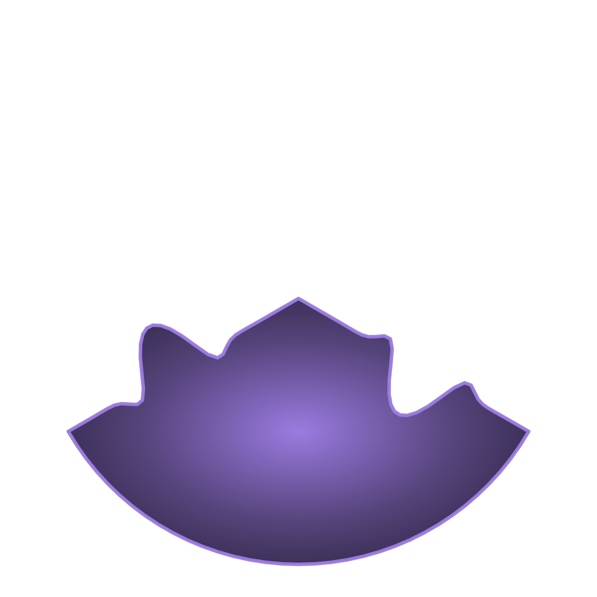
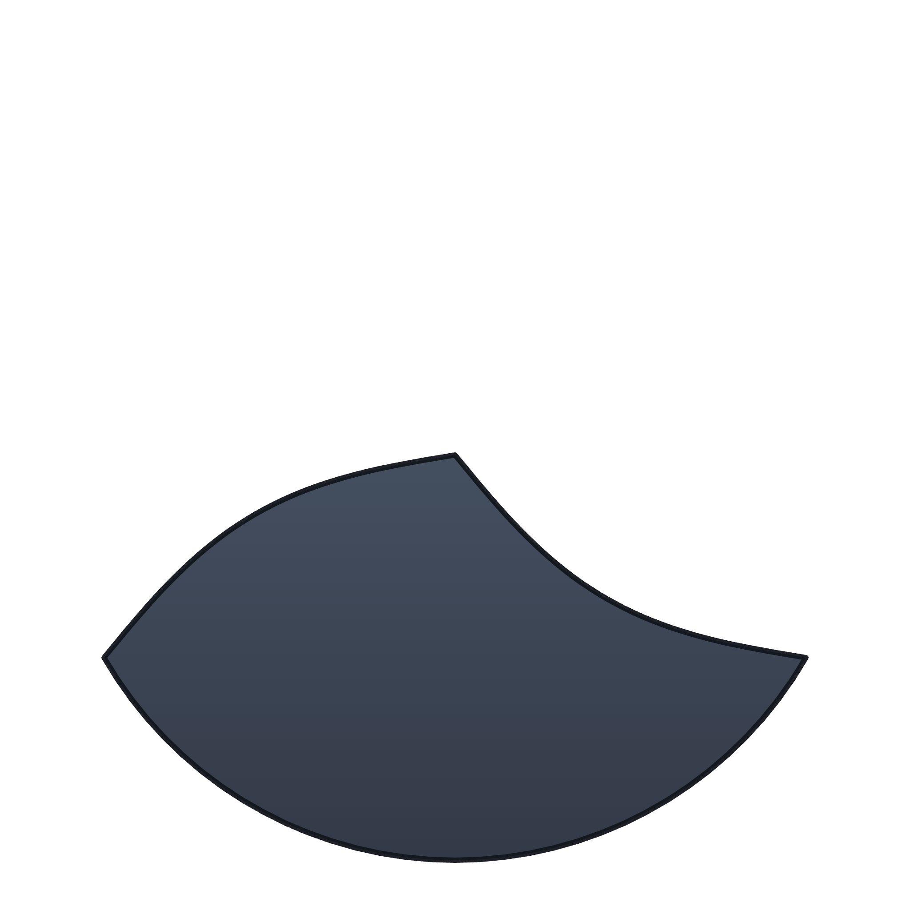
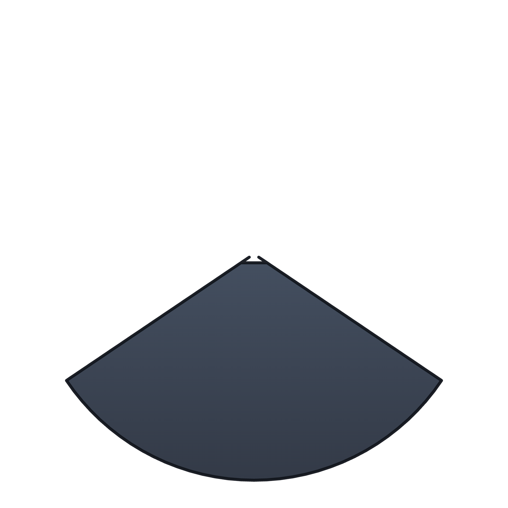
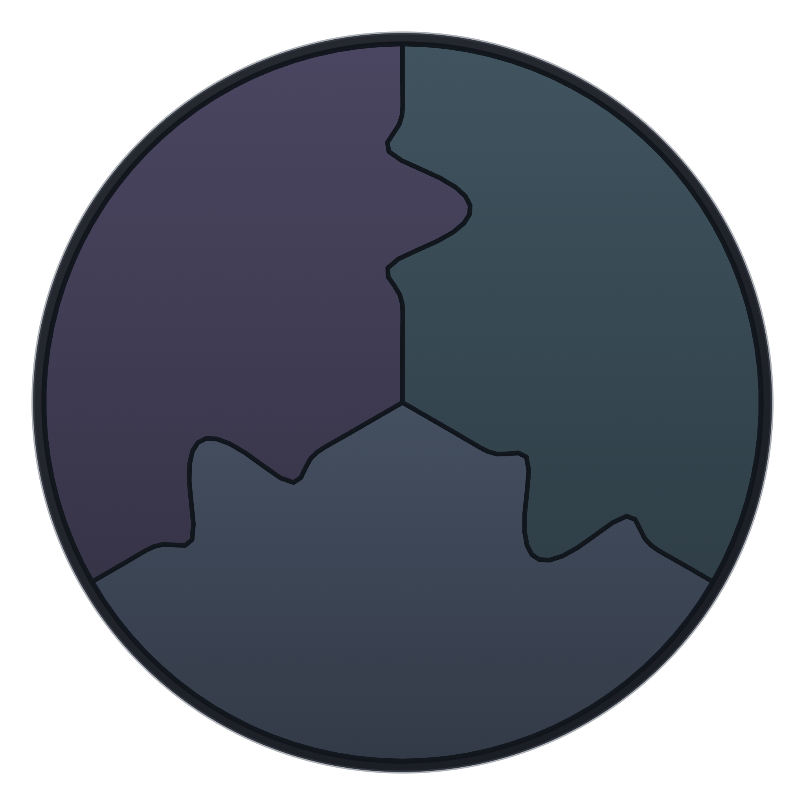
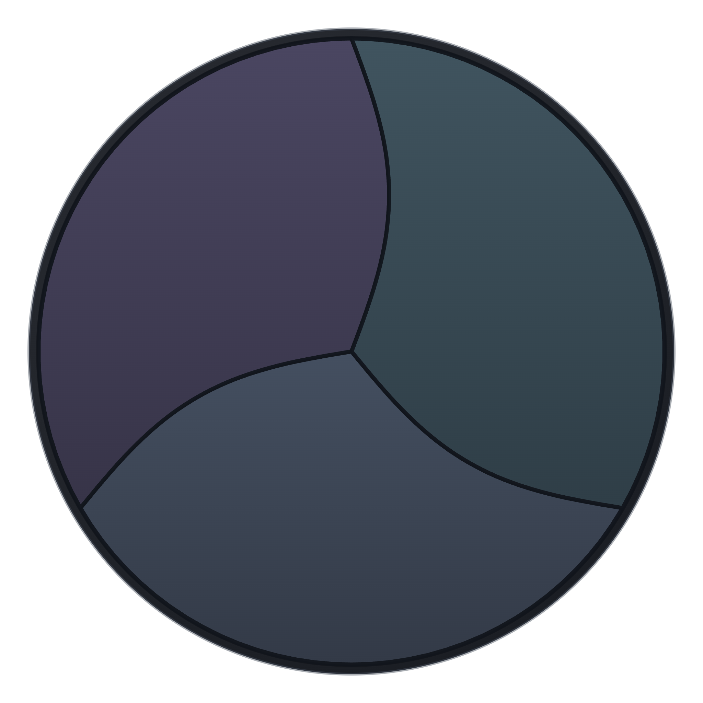
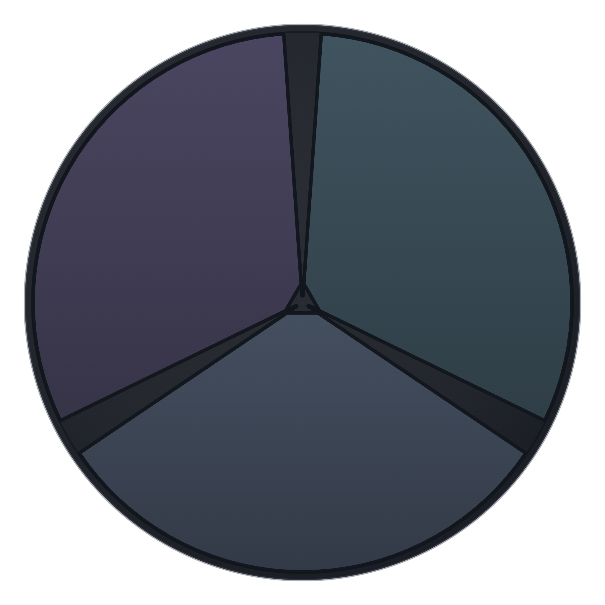
Drawn horizontal (2048×768). Pivot = Center; rotate to align each span between two districts.
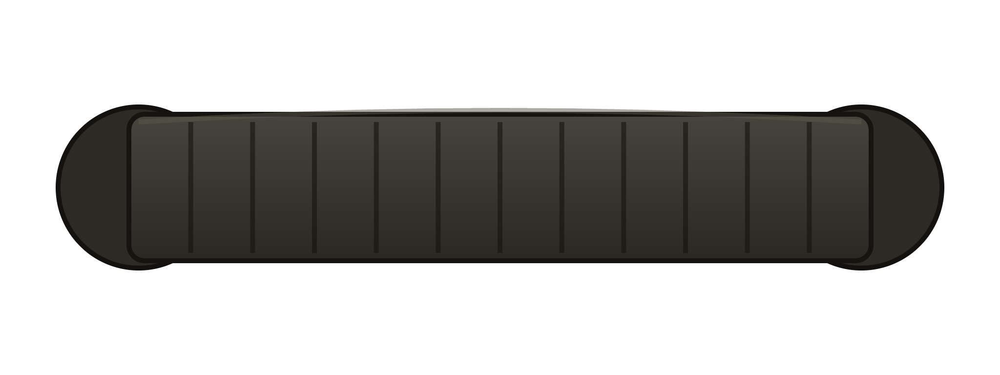
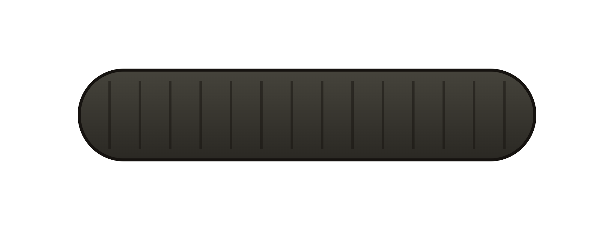
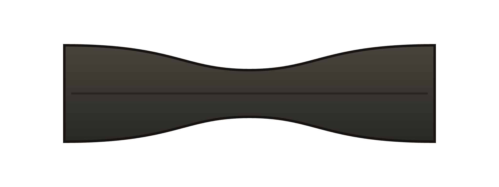
See README.md in this folder for Unity import settings (sprite mode, pivot, pixels-per-unit) and the corrupted-tile emissive recipe.